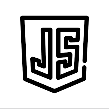

HardSkills
As a second-year student studying web development, I've learned how to use HTML, CSS, and Javascript to make websites. For Gamedevelopment I worked with C# and Visual Studio Code. I've practiced a lot and worked on different projects where I used these skills. I'm excited to keep learning and work on more cool web projects


